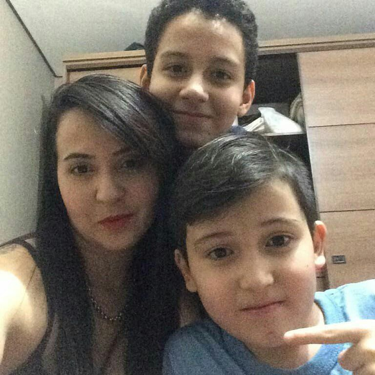
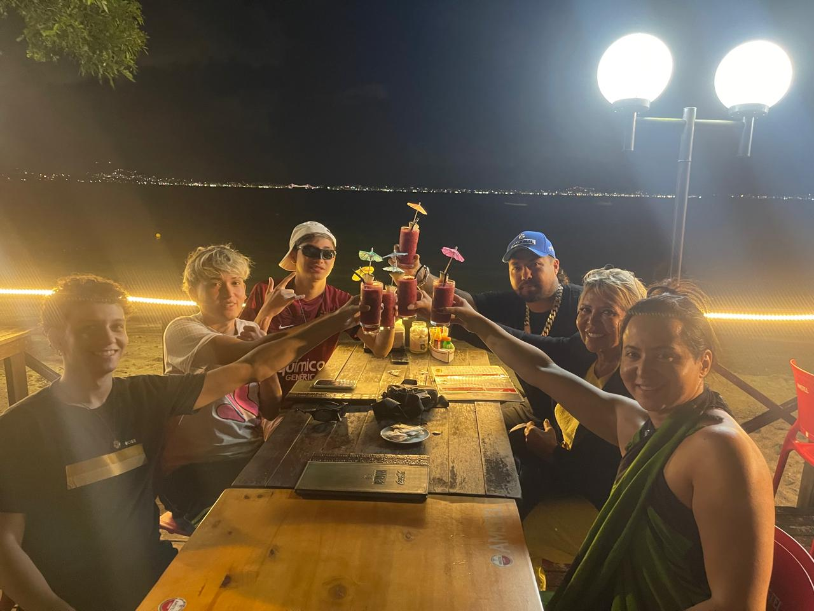

Obrigado por tudo mãe...

Às vezes nem percebemos o quanto o tempo voa… até olhar para trás e perceber que as memórias mais felizes da minha vida sempre tiveram você nelas.
Obrigado por sempre estar ao meu lado nos momentos felizes e difíceis.

Você continua sendo a pessoa mais importante da minha vida 🌸
Mãe, eu não sei se algum dia vou conseguir demonstrar o tamanho da minha gratidão por tudo o que você fez por mim e pelo meu irmão. A gente passou por momentos muito difíceis. Momentos em que faltava muita coisa… mas nunca faltou amor, força e cuidado vindo de você. Mesmo nas fases mais pesadas da nossa vida, você sempre deu tudo de si para tentar nos dar o melhor, mesmo quando quase não tinha nada para você mesma. Você foi uma mãe guerreira em todos os sentidos da palavra. Eu cresci vendo o quanto você lutou, o quanto abriu mão de coisas por nós e o quanto continuou firme mesmo cansada, machucada ou preocupada. E hoje, ver você construindo sua própria carreira, correndo atrás dos seus sonhos e finalmente começando a conquistar seu futuro me dá um orgulho impossível de explicar. Você merece o mundo inteiro. Obrigado por nunca desistir da gente. Obrigado por cada sacrifício silencioso. Obrigado por continuar forte mesmo quando tudo parecia difícil demais. Eu sou muito grato por ter você como mãe e quero que você saiba que eu te amo mais do que qualquer texto conseguiria explicar. Feliz Dia das Mães ❤️